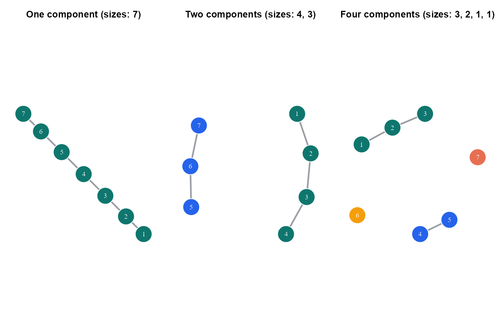
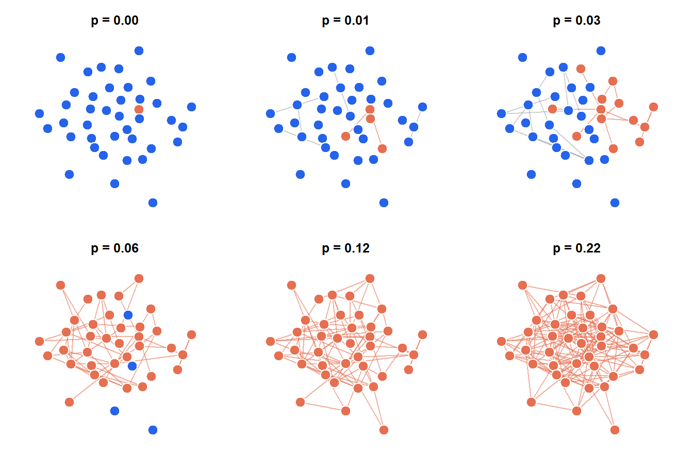
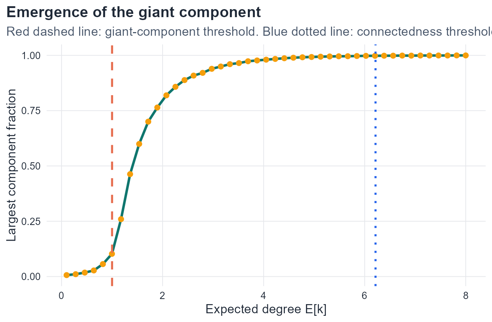
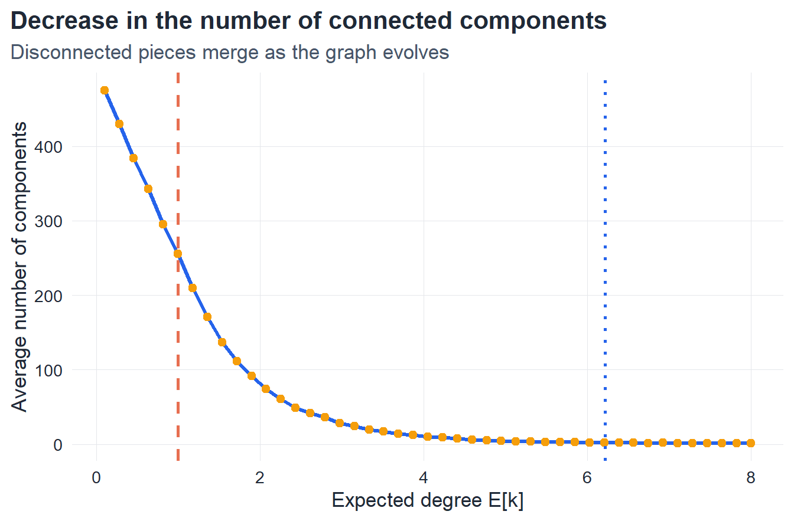
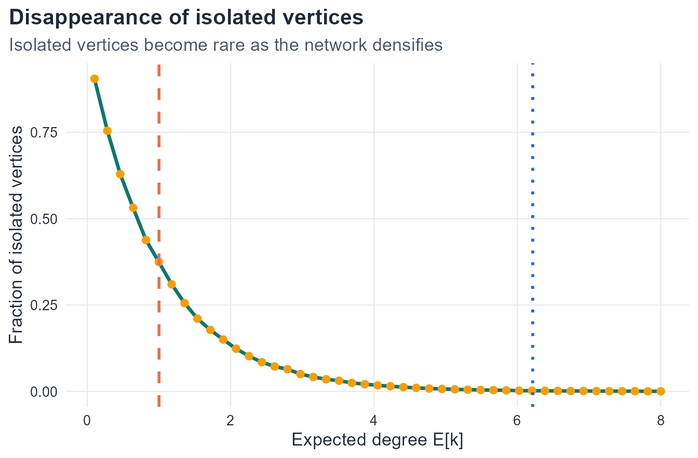
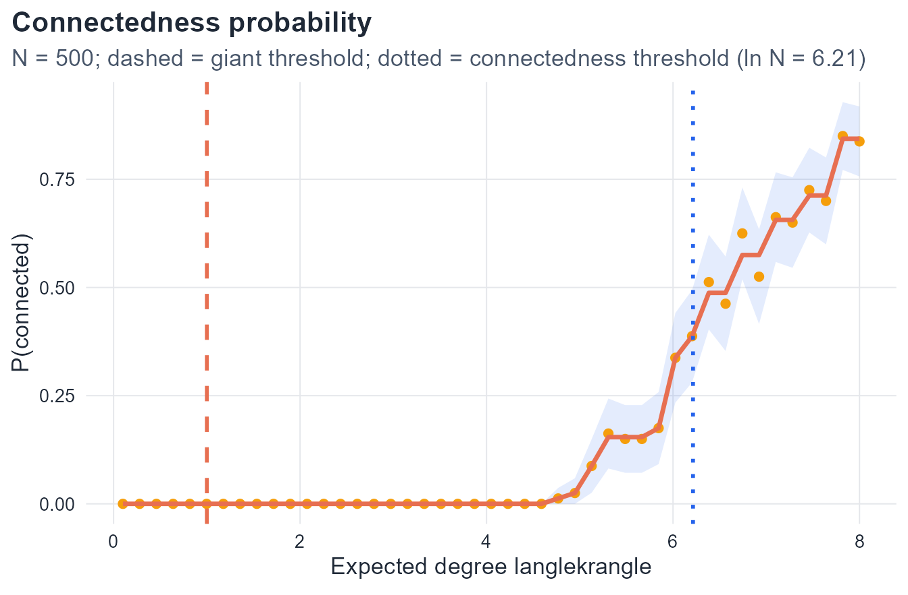

3 The Evolution of Random Graphs
3.1 Introduction
The previous chapter focused on the static properties of random graphs: the Erdős–Rényi models, average degree, degree distribution, and clustering coefficient. Those quantities describe the graph at a fixed stage.
A second and equally important question is how a random graph changes as links are gradually introduced. At the beginning there may be no links at all, so every vertex is isolated. When a small number of links is added, tiny connected groups appear. As the density of links increases, these groups merge into larger connected structures. Eventually one component becomes comparable in size to the full graph. This object is called the giant component.
The central theme of this chapter is that the emergence of large-scale connectivity is governed by a threshold phenomenon. In the Erdős–Rényi model, the expected degree
\langle k \rangle = p(N-1)
is the key parameter controlling that transition.
3.2 Learning goals
By the end of this chapter, it should be possible to:
- define connected graphs and connected components precisely
- define the size of a component and the notion of a giant component
- explain how a random graph evolves as the edge probability increases
- distinguish the subcritical, critical, supercritical, and connected regimes
- explain why the threshold \langle k \rangle = 1 is important
- explain why the connectedness threshold occurs near \langle k \rangle = \ln N
- verify these ideas numerically in
R
3.3 Connectedness and components
Connected graph
Definition 3.1 Let G=(V,E) be an undirected graph. The graph G is called connected if for every pair of distinct vertices u,v \in V, there exists a path in G from u to v.
This definition means that the graph forms one reachable structure. Starting from any vertex, it is possible to move to any other vertex by following a sequence of existing edges.
Connectedness is therefore a global property. It is not determined by one degree value or by one local motif. It asks whether the graph, as a whole, holds together.
If this condition fails, then the graph is disconnected. In that case the graph splits into separate connected pieces.
Connected component
Definition 3.2 Let G=(V,E) be an undirected graph. A subgraph H of G is called a connected component of G if:
- H is connected, and
- H is maximal with respect to inclusion among connected subgraphs of G.
The word connected means that every pair of vertices in H can be joined by a path entirely contained in H.
The word maximal is equally important. It means that H cannot be enlarged by adding another vertex of G while keeping the subgraph connected. So a connected component is not merely a connected part of the graph. It is a connected part that is already as large as possible.
This gives a natural decomposition of a disconnected graph: the graph is partitioned into its connected components.
Remark 3.1. The connected components of a graph form a partition of the vertex set V. Every vertex belongs to exactly one connected component.
Size of a component
Definition 3.3 Let H be a connected component of a graph G=(V,E). The size of H is the number of vertices in H, namely
|V(H)|.
This quantity is simple, but it becomes crucial in random graph theory. As a random graph evolves, the central question is how the component-size pattern changes. Do only small components exist, or does one component become comparable to the full graph?
Isolated vertex
Definition 3.4 A vertex v \in V is called isolated if its degree is zero.
An isolated vertex is a connected component of size 1. So isolated vertices are not exceptions to the theory of components. They are simply the smallest possible components.
Example: component structure
The three graphs above illustrate the same idea in progressively more disconnected form:
- in the first graph, every vertex belongs to one single connected component
- in the second graph, the graph splits into two components
- in the third graph, the graph decomposes into several small pieces, including isolated vertices
Component-size table
| Graph | Component sizes |
|---|---|
| One component | 7 |
| Two components | 4, 3 |
| Four components | 3, 2, 1, 1 |
This table translates the picture into numerical structure and prepares the transition to the notion of a giant component.
3.4 Giant component
Definition
Definition 3.5 Let G_N be a graph on N vertices, and let C_{\max}(G_N) denote its largest connected component. A sequence of random graphs is said to contain a giant component if
\frac{|C_{\max}(G_N)|}{N}
converges to a positive quantity as N \to \infty.
This definition should be interpreted carefully. Every finite graph has a largest connected component, but not every largest connected component is a giant component in the asymptotic sense.
The term giant means that the component contains a nonvanishing fraction of all vertices. It is therefore a macroscopic object, not merely the largest among several still-small pieces.
Why the giant component matters
The giant component marks the first stage at which the graph begins to behave like a true network at the global level.
Before it appears:
- most vertices belong only to tiny disconnected groups
- reachability is local
- no global connected backbone exists
After it appears:
- a positive fraction of vertices become mutually reachable
- one connected structure dominates the graph
- system-wide connectivity becomes possible
So the emergence of the giant component is the key event in the evolution of a random graph.
3.5 The evolution of a random graph
Consider the Erdős–Rényi model G(N,p) with fixed N and variable parameter p \in [0,1].
At one extreme,
p = 0,
no edges are present, so every vertex is isolated.
At the other extreme,
p = 1,
every possible edge is present, so the graph is complete and hence connected.
The mathematically interesting behavior lies between these extremes. As p increases,
- isolated vertices begin to join into tiny components,
- small components merge into larger components,
- one component begins to dominate,
- eventually the graph becomes connected.
So the evolution of the graph is most naturally described through the evolution of its component structure.
Evolution through snapshots
To visualize this process clearly, the same vertex set and the same vertex positions are used in all snapshots below. The edge set evolves monotonically: once an edge appears, it remains present at later stages. This makes the sequence a true network evolution rather than a collection of unrelated random realizations.

These snapshots show several distinct structural stages.
- At p=0, all vertices are isolated.
- For very small p, tiny components begin to appear.
- At intermediate values of p, components merge and one of them starts to dominate.
- At larger values of p, most vertices belong to a single large connected structure.
The qualitative transition is therefore from fragmentation to macroscopic connectivity.
3.6 Regimes of random-graph evolution
A convenient parameter for describing these regimes is the expected degree
\langle k \rangle = p(N-1).
This quantity is more informative than p alone because it measures the expected number of neighbors per vertex.
Subcritical regime
Definition 3.6 The random graph is in the subcritical regime when
\langle k \rangle < 1.
In this regime, no giant component exists. Almost all components are small, and isolated vertices are common. The graph contains connectivity, but only at a local scale.
Critical regime
Definition 3.7 The random graph is in the critical regime when
\langle k \rangle \approx 1.
This is the transition region. It is the stage at which the graph changes from a collection of small components into a graph containing a giant component.
In finite networks, the transition is not perfectly sharp. But as the system becomes large, the threshold becomes more pronounced.
Supercritical regime
Definition 3.8 The random graph is in the supercritical regime when
\langle k \rangle > 1.
This is the first regime in which a giant component exists. One connected component contains a positive fraction of all vertices, while many smaller components continue to coexist with it.
This regime is especially important because it is the first stage at which the graph has a genuine large-scale network structure.
Connected regime
Definition 3.9 The random graph enters the connected regime when the graph is connected with high probability as N becomes large. In the Erdős–Rényi model this occurs near
\langle k \rangle \approx \ln N,
or equivalently,
p \approx \frac{\ln N}{N}.
This threshold is much larger than the giant-component threshold \langle k \rangle = 1. So the emergence of a giant component and the graph becoming connected are two different events.
There is therefore a broad intermediate range in which the graph already has a giant component but is not yet fully connected.
3.7 Mathematical description of the giant component
A central quantity is the relative size of the giant component,
S = \frac{N_G}{N},
where N_G denotes the number of vertices in the largest connected component.
In the Erdős–Rényi model, the asymptotic fraction S of vertices contained in the giant component satisfies the self-consistency equation
S = 1 - e^{-\langle k \rangle S}.
This equation is a concise mathematical description of the giant component.
Interpretation of the self-consistency equation
The quantity 1-S is the fraction of vertices that do not belong to the giant component.
A vertex fails to belong to the giant component only if all of its potential connections lead to vertices that also fail to belong to the giant component. In the Erdős–Rényi setting, that logic leads to the exponential form above.
So the equation
S = 1 - e^{-\langle k \rangle S}
expresses the self-consistent probability that a vertex belongs to the giant structure.
Near-threshold behavior
When \langle k \rangle is only slightly larger than 1, the giant component is still small relative to its later size, but it is already macroscopic. In that near-threshold region,
S \sim 2(\langle k \rangle - 1) \qquad \text{as } \langle k \rangle \downarrow 1^{+}.
Equivalently,
N_G \sim 2(\langle k \rangle - 1)N.
So near the transition, the giant component grows linearly with the distance from the threshold.
Structure in the supercritical regime
In the supercritical regime, the graph has two coexisting structural parts:
- one giant component containing a positive fraction of all vertices,
- many finite components outside the giant component.
Near the threshold, those finite components are typically small and predominantly tree-like. By contrast, the giant component contains many cycles and loops. So the onset of the giant component is also the onset of genuinely complex global connectivity.
Connectedness threshold
The giant component threshold occurs near
\langle k \rangle = 1,
but the graph becomes connected only much later, near
\langle k \rangle = \ln N.
This is a major conceptual point. The existence of a giant component does not imply that the graph is connected.
So there is an intermediate range,
1 < \langle k \rangle < \ln N,
in which
- the graph has a giant component,
- many smaller components still exist,
- isolated vertices may still be present,
- the full graph is not yet connected.
Only when the average degree reaches order \ln N do these remaining disconnected pieces disappear with high probability.
3.8 Numerical exploration
The structural transition can be observed numerically by generating many graphs for different values of p and tracking several global quantities.
set.seed(2026)
n <- 500
k_grid <- seq(0.1, 8.0, length.out = 45)
p_grid <- k_grid / (n - 1)
reps <- 80
evolution_tbl <- map_dfr(p_grid, function(p) {
map_dfr(seq_len(reps), function(rep_id) {
g <- sample_gnp(n = n, p = p, directed = FALSE, loops = FALSE)
comp <- components(g)$csize
tibble(
p = p,
mean_degree = p * (n - 1),
rep = rep_id,
largest_component_fraction = max(comp) / n,
number_of_components = length(comp),
isolated_fraction = sum(comp == 1) / n,
connected_indicator = as.integer(length(comp) == 1)
)
})
})
evolution_summary <- evolution_tbl |>
group_by(p, mean_degree) |>
summarise(
largest_component_fraction = mean(largest_component_fraction),
number_of_components = mean(number_of_components),
isolated_fraction = mean(isolated_fraction),
connected_probability = mean(connected_indicator),
connected_probability_se = sqrt(connected_probability * (1 - connected_probability) / n()),
.groups = "drop"
)
iso_fit <- isoreg(evolution_summary$mean_degree, evolution_summary$connected_probability)
evolution_summary$connected_probability_iso <- iso_fit$yfLargest component fraction
ggplot(evolution_summary, aes(x = mean_degree, y = largest_component_fraction)) +
geom_line(color = course_cols$teal, linewidth = 1.2) +
geom_point(color = course_cols$gold, size = 2.1) +
geom_vline(xintercept = 1, color = course_cols$coral, linewidth = 1.0, linetype = 2) +
geom_vline(xintercept = log(n), color = course_cols$blue, linewidth = 1.0, linetype = 3) +
labs(
title = "Emergence of the giant component",
subtitle = "Red dashed line: giant-component threshold. Blue dotted line: connectedness threshold.",
x = "Expected degree E[k]",
y = "Largest component fraction"
)
This plot captures the main phase transition. For small expected degree, the largest component occupies only a small fraction of the graph. Near \langle k \rangle = 1, the largest component begins to grow rapidly. Well before the graph becomes connected, one component already dominates the structure.
Number of connected components
ggplot(evolution_summary, aes(x = mean_degree, y = number_of_components)) +
geom_line(color = course_cols$blue, linewidth = 1.2) +
geom_point(color = course_cols$gold, size = 2.1) +
geom_vline(xintercept = 1, color = course_cols$coral, linewidth = 1.0, linetype = 2) +
geom_vline(xintercept = log(n), color = course_cols$blue, linewidth = 1.0, linetype = 3) +
labs(
title = "Decrease in the number of connected components",
subtitle = "Disconnected pieces merge as the graph evolves",
x = "Expected degree E[k]",
y = "Average number of components"
)
This second plot reveals the same transition from another viewpoint. At small expected degree, the graph contains many disconnected pieces. As more links are added, these components merge, and the total number of components decreases.
Fraction of isolated vertices
ggplot(evolution_summary, aes(x = mean_degree, y = isolated_fraction)) +
geom_line(color = course_cols$teal, linewidth = 1.2) +
geom_point(color = course_cols$gold, size = 2.1) +
geom_vline(xintercept = 1, color = course_cols$coral, linewidth = 1.0, linetype = 2) +
geom_vline(xintercept = log(n), color = course_cols$blue, linewidth = 1.0, linetype = 3) +
labs(
title = "Disappearance of isolated vertices",
subtitle = "Isolated vertices become rare as the network densifies",
x = "Expected degree E[k]",
y = "Fraction of isolated vertices"
)
Isolated vertices are abundant at very small edge density, but they disappear as the graph evolves. Their disappearance is one of the main signals that the graph is approaching connectedness.
Probability of connectedness
ggplot(evolution_summary, aes(x = mean_degree)) +
geom_ribbon(
aes(
ymin = pmax(connected_probability - 1.96 * connected_probability_se, 0),
ymax = pmin(connected_probability + 1.96 * connected_probability_se, 1)
),
fill = course_cols$blue,
alpha = 0.12
) +
geom_point(aes(y = connected_probability), color = course_cols$gold, size = 1.9) +
geom_line(aes(y = connected_probability_iso), color = course_cols$coral, linewidth = 1.2) +
geom_vline(xintercept = 1, color = course_cols$coral, linewidth = 1.0, linetype = 2) +
geom_vline(xintercept = log(n), color = course_cols$blue, linewidth = 1.0, linetype = 3) +
labs(
title = "Connectedness probability",
subtitle = "The true probability is monotone increasing; the fitted line enforces that theoretical property.",
x = "Expected degree E[k]",
y = "Probability that the graph is connected"
)
For fixed N, the true connectedness probability is a monotone increasing function of p. Small downward wiggles in raw simulation estimates are caused by Monte Carlo noise. The points in the figure are the empirical estimates from a finite number of repetitions, while the solid line is an isotonic fit, which enforces the correct monotone behavior.
This last plot makes the distinction between the two thresholds especially clear. The giant component appears near \langle k \rangle = 1, but the probability that the graph is fully connected remains small until the expected degree is of order \ln N.
3.9 Summary of regimes
| Regime | Condition | Main structural property |
|---|---|---|
| Subcritical | \langle k \rangle < 1 | Only small connected components are present |
| Critical | \langle k \rangle \approx 1 | The giant component begins to emerge |
| Supercritical | \langle k \rangle > 1 | A giant component coexists with many finite components |
| Connected | \langle k \rangle \approx \ln N | The full graph is connected with high probability |
This table summarizes the evolution of the Erdős–Rényi random graph in terms of its component structure.
3.10 In-class questions
- Why is connectedness a global property of a graph?
- What role does maximality play in the definition of a connected component?
- Why is an isolated vertex still a connected component?
- What distinguishes a largest component from a giant component?
- Why does the threshold \langle k \rangle = 1 matter?
- Why does the connectedness threshold occur later, near \langle k \rangle = \ln N?
- Why can a graph have a giant component and still be disconnected?
3.11 End-of-chapter exercises
The exercises below are grouped into three categories:
- mathematical exercises,
- conceptual and analytical exercises,
- simulation and coding exercises.
They are designed to move from formal understanding to computational verification.
Part I. Mathematical exercises
Exercise 1. Components and partitions
Let G=(V,E) be an undirected graph.
- Prove that every vertex of G belongs to at least one connected component.
- Prove that no vertex can belong to two distinct connected components.
- Deduce that the connected components of G form a partition of the vertex set V.
Exercise 2. Isolated vertices
Let v \in V be a vertex with degree zero.
- Prove that \{v\} is a connected subgraph.
- Prove that \{v\} is maximal among connected subgraphs containing v.
- Conclude that an isolated vertex is a connected component of size 1.
Exercise 3. Giant component criterion
Let C_{\max}(G_N) denote the largest connected component of a graph on N vertices.
- Explain why every finite graph has a largest connected component.
- Give an example of a sequence of graphs for which \frac{|C_{\max}(G_N)|}{N} \to 0.
- Give an example of a sequence of graphs for which \frac{|C_{\max}(G_N)|}{N} \to c > 0.
- Explain why the second case corresponds to the existence of a giant component.
Exercise 4. Threshold written in terms of p
In the Erdős–Rényi model G(N,p), the expected degree is
\langle k \rangle = p(N-1).
- Show that the condition \langle k \rangle = 1 implies p_c = \frac{1}{N-1}.
- Show that for large N this becomes p_c \sim \frac{1}{N}.
- Explain why this implies that the critical edge density becomes very small in large networks.
Exercise 5. Connectedness threshold
The connectedness threshold in the Erdős–Rényi model occurs near
\langle k \rangle \approx \ln N.
- Show that this corresponds to p \approx \frac{\ln N}{N-1}.
- Compare this threshold with the giant-component threshold p_c \approx \frac{1}{N-1}.
- Prove that \ln N > 1 \qquad \text{for all } N>e, and explain why connectedness must occur later than the emergence of the giant component.
Exercise 6. The self-consistency equation
The asymptotic fraction S of nodes in the giant component satisfies
S = 1 - e^{-\langle k \rangle S}.
- Verify that S=0 is always a solution.
- Show that if \langle k \rangle < 1, then the tangent of the right-hand side at S=0 has slope smaller than 1.
- Explain why this indicates that no positive solution exists in the subcritical regime.
- Show that when \langle k \rangle > 1, the slope at S=0 exceeds 1.
- Explain why this allows the existence of a positive solution corresponding to a giant component.
Exercise 7. Near-threshold expansion
Starting from
S = 1 - e^{-\langle k \rangle S},
assume that S is small and that \langle k \rangle = 1+\varepsilon with \varepsilon>0 small.
- Expand the exponential up to second order in S.
- Show that, to leading order, S \approx 2(\langle k \rangle - 1).
- Interpret this result in terms of the growth of the giant component just above the threshold.
Part II. Conceptual and analytical exercises
Exercise 8. Regime classification
For each of the following values of \langle k \rangle, determine whether the graph is expected to be in the subcritical, critical, supercritical, or connected regime:
- \langle k \rangle = 0.4
- \langle k \rangle = 0.95
- \langle k \rangle = 1.8
- \langle k \rangle = \ln 500
In each case, describe the expected component structure.
Exercise 9. Giant component versus connected graph
Explain carefully why the following two statements are not equivalent:
- the graph has a giant component,
- the graph is connected.
Your answer should include:
- a formal distinction,
- an explanation in terms of component sizes,
- an example of a graph that has a giant component but is not connected.
Exercise 10. Structural interpretation of the regimes
Write a short mathematical discussion comparing the four regimes:
- subcritical,
- critical,
- supercritical,
- connected.
For each regime, describe:
- the typical component sizes,
- whether isolated vertices are common,
- whether a giant component exists,
- whether the graph is connected.
Exercise 11. Why the emergence is a phase transition
The emergence of the giant component is often described as a phase transition.
Write a short explanation of this statement. Your answer should address:
- what quantity changes qualitatively,
- what the threshold parameter is,
- why the transition is not merely a gradual visual change,
- why this phenomenon is global rather than local.
Exercise 12. Trees and cycles outside the giant component
In the supercritical regime, many finite components outside the giant component are tree-like.
- Explain why a finite tree on m vertices has exactly m-1 edges.
- Explain why the appearance of cycles indicates additional structural complexity.
- Discuss why the giant component is expected to contain cycles, whereas many small finite components remain tree-like near the threshold.
Part III. Simulation and coding exercises
Exercise 13. Component-size computation
Write an R function that takes an undirected graph g and returns:
- the number of connected components,
- the vector of component sizes,
- the size of the largest connected component,
- the fraction of vertices in the largest connected component.
Test the function on at least three hand-constructed graphs.
Exercise 14. Evolution of the largest component
For fixed N=500, simulate the model G(N,p) over a grid of p values corresponding to
0.1 \le \langle k \rangle \le 8.
For each value of p, estimate the average largest-component fraction over repeated realizations.
Tasks:
- plot the largest-component fraction against \langle k \rangle,
- indicate the line \langle k \rangle = 1,
- explain where the giant component begins to emerge.
Exercise 15. Number of components and isolated vertices
Using the same simulations as in Exercise 14, compute and plot:
- the average number of connected components,
- the average fraction of isolated vertices.
Discuss how these two quantities evolve as \langle k \rangle increases.
Exercise 16. Empirical connectedness probability
For fixed N=500, estimate the probability that G(N,p) is connected for a grid of values of p.
Tasks:
- plot the empirical connectedness probability against \langle k \rangle,
- indicate the line \langle k \rangle = \ln N,
- explain why the curve should be monotone increasing in theory,
- explain why Monte Carlo estimates may show small fluctuations.
Exercise 17. Finite-size comparison
Repeat the largest-component simulation for
N = 100,\quad 250,\quad 500,\quad 1000.
For each value of N:
- plot the largest-component fraction against \langle k \rangle,
- compare the sharpness of the transition near \langle k \rangle = 1,
- discuss how the finite-size behavior changes as N increases.
Exercise 18. Connectedness threshold and system size
For each of the values
N = 100,\quad 250,\quad 500,\quad 1000,
estimate numerically the value of \langle k \rangle at which the graph becomes connected with probability approximately 0.5.
Then compare your estimates with \ln N.
Discuss whether the numerical behavior supports the theoretical scaling of the connectedness threshold.
Exercise 19. Monotone network evolution
Construct a sequence of graphs on a fixed set of vertices such that the edge set grows monotonically as p increases.
Tasks:
- keep vertex positions fixed across all snapshots,
- display at least six stages of evolution,
- highlight the largest component at each stage,
- explain how the component structure changes visually.
Exercise 20. Numerical solution of the giant-component equation
Consider the equation
S = 1 - e^{-\langle k \rangle S}.
- Write an
Rfunction that solves this equation numerically for a given value of \langle k \rangle. - Compute the solution for a grid of values of \langle k \rangle between 0 and 5.
- Plot the resulting theoretical curve.
- Compare it with your simulation-based estimate of the largest-component fraction.
Exercise 21. Short computational report
Prepare a short report of approximately two pages based on your simulations. The report should include:
- a brief statement of the model,
- at least two figures,
- one discussion of the threshold near \langle k \rangle = 1,
- one discussion of the connectedness threshold near \langle k \rangle = \ln N,
- a concluding paragraph interpreting the emergence of global connectivity.
3.12 Suggested project-style extension
A strong mini-project for this chapter is the following:
Compare the simulated evolution of G(N,p) with the theoretical equations for giant-component emergence and connectedness threshold.
A complete submission should contain:
- mathematical derivations,
- simulation code,
- plots,
- interpretation of the results.
3.13 Concluding remarks
The evolution of a random graph is one of the clearest demonstrations of how global structure can arise from simple local randomness.
At first the graph contains only isolated vertices and very small components. As edges are added, these small pieces merge. Near the threshold \langle k \rangle = 1, a giant component emerges. Much later, near \langle k \rangle = \ln N, the graph becomes connected with high probability.
So the emergence of a network is not a smooth undifferentiated process. It is organized by precise structural thresholds, and those thresholds can be described mathematically in terms of component size and expected degree.